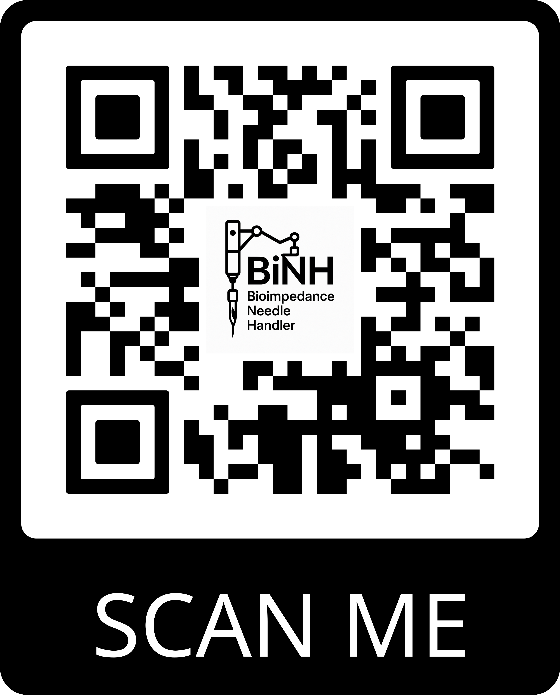

Haptic-Enhanced Bioimpedance Needle for Precision Navigation in Central Venous Catheterisation
1Department of Electronic and Electrical Engineering, UCL, Torrington Place, London WC1E 7JE, UK
2Centre for Intensive Care Medicine, UCL, Gower Street, London WC1E 6BT, UK
2Centre for Intensive Care Medicine, UCL, Gower Street, London WC1E 6BT, UK
Central venous catheterisation (CVC) is a critical but challenging procedure, often complicated by needle misplacement. This project presents a bioimpedance (BIOZ) system with haptic feedback to assist clinicians in precise needle navigation.
Key Features
100% success rate in venous access (Z-axis)
Millimetre-level precision navigation
Real-time tissue classification
Compact wireless design
Haptic feedback integration
Beyond Surgery – CVC, PIVC
Portable Motion Detection
Electrochemical Sensing
Real-Time Impedance Measurement
Welcome to Collaboration!
Research Team Contact
Qingyu Zhang
Email: qingyu.zhang.23@ucl.ac.uk
GitHub: github.com/alfredzhang98
LinkedIn: LinkedIn Profile
GitHub: github.com/alfredzhang98
LinkedIn: LinkedIn Profile

Interactive 3D Model
Left Drag to rotate
Right Drag to move
Scroll to zoom
Left Drag to rotate
Right Drag to move
Scroll to zoom